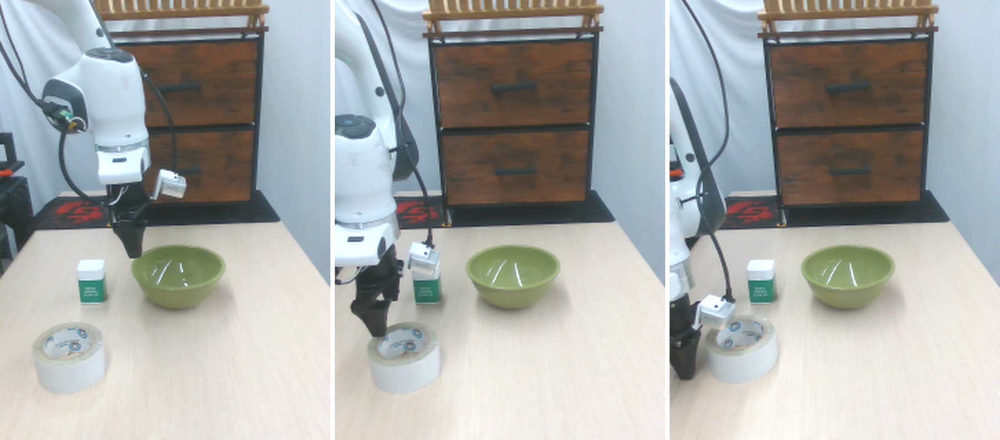
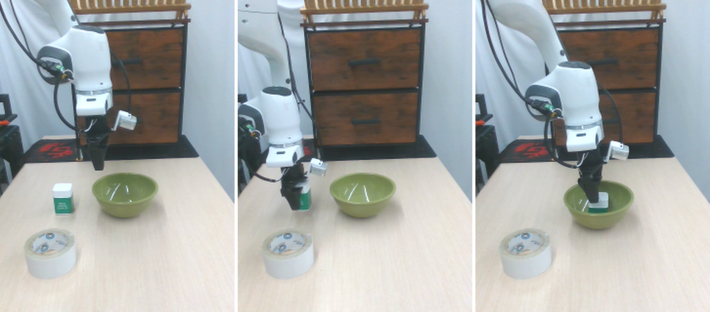
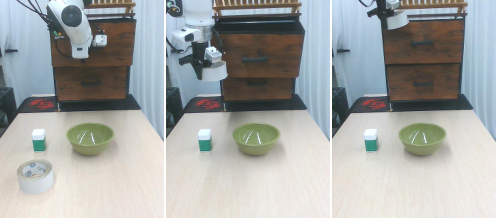
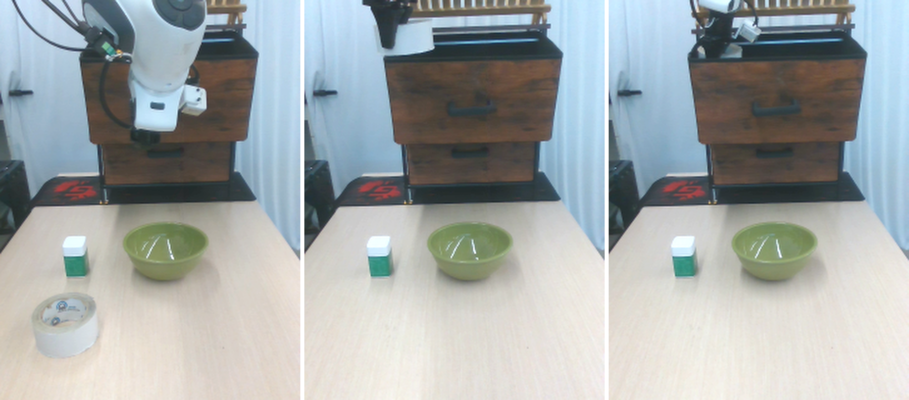

Vision-language-action (VLA) policies are surprisingly sensitive to the exact wording of the task prompt. We present a method that automatically optimizes the natural-language prompt given to a fixed VLA policy, searching over candidate rephrasings and scoring them with real-robot rollouts. Without changing the policy weights, prompt optimization substantially raises task success rates: a vague instruction that almost always fails is turned into a precise one the policy can reliably execute. We demonstrate the approach on real Franka manipulation tasks.
Same policy, same scene — only the wording of the instruction changes. The original prompt fails; the optimized prompt succeeds.
Original: “put the green container in the bowl” → Optimized: “put the green container in the green bowl”


Original: “open the top drawer and put the tape above inside” → Optimized: “open the top drawer and put the tape inside”


Add a method figure here (e.g. assets/method.png) and a short description of the
prompt-optimization loop: propose candidate prompts → roll out on the robot → score by success
rate → keep the best.
@misc{jiang2026promptopt,
title = {Optimizing Language Prompts for Real-World Vision-Language-Action Policies},
author = {Jiang, Xinyun and Others},
year = {2026},
url = {https://xinyunsunshine.github.io/prompt-rl/}
}